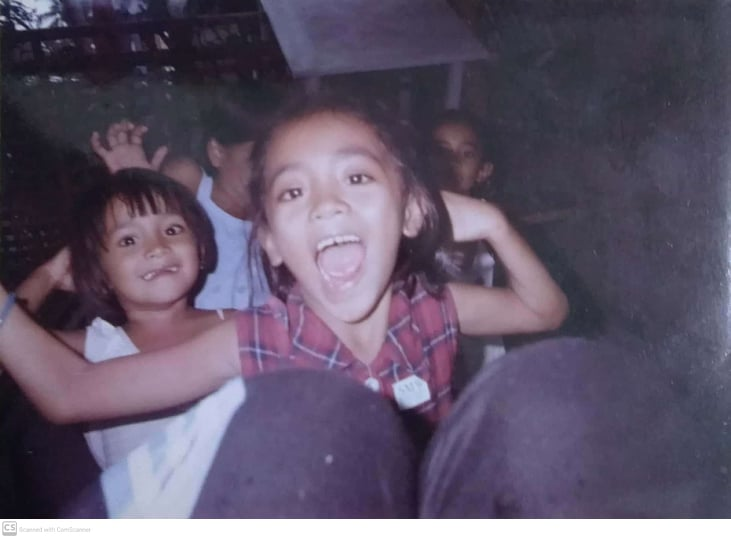
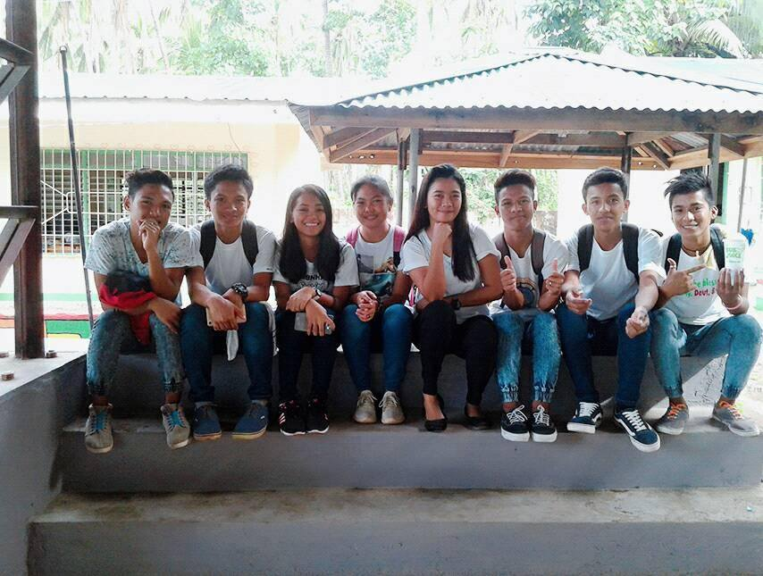
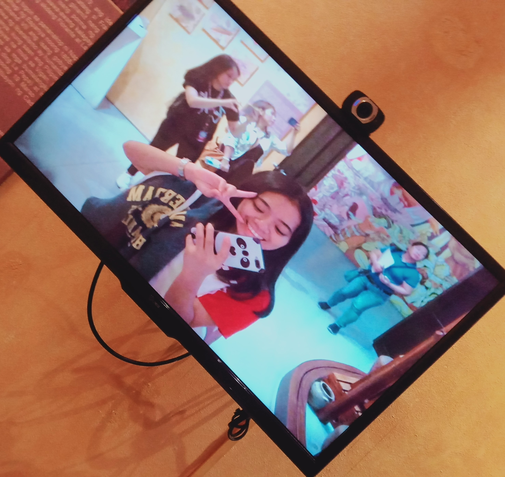

Her childhood years were one of the best experiences in her life 1. She has a complete but not perfect family 2. Her mother is a teacher and her father is a fisherman 3. She has four siblings: three girls and one boy 4. She's the second child 5. Just like the other children, she can play freely 6. They would not go home until the sun went down, so in the end, their mother hit them 7. She experienced the whip of the belt and hanger, kneeling on the soybean with 2 or 3 books in both hands 8. She even experienced being tied and standing with an ant for an hour 9. But she understood all of that because it was part of how they disciplined the children by their parents 10. Like other children, they need to sleep every 12 o'clock and the rule of their guardian is that those who won't sleep can't play outside at 4 pm 11. Of course, she was stubborn then, so she pretended to be sleeping 12. When it was 3 in the afternoon, they were given 3 pesos, and then they were to buy a snack with the amount of 1 peso each from the store 13. They were happy and content with it 14. When it was 4 pm, they could play outside, and she had a lot of playmates 15. Patintero, tag, Chinese garter, hide and seek, and tumbang preso: she has experience of playing all of those 16. Patintero is her favorite game 17. Patintero also known as harangang-taga or tubigan, is a traditional Filipino children's game. Along with tumbang preso, it is one of the most popular outdoor games played by children in the Philippines 18.
Her mother taught them how to do the household chores because she was the second eldest, so when their mother was still in school, they used to wipe the windows, sweep the floor, wash the dishes, do the laundry, and water her mother's plants 19. Then every vacation, their aunt borrowed her and her cousin to go to Manila to be playmates with their aunt's son 20. She's enjoying it because it's the only time she's experienced swimming in a swimming pool and tasting different foods there 21. Every Christmas party is the only occasion that they can buy a new pair of clothes, and they are very thankful that their mother somehow buys them new clothes 22. Then, at every Christmas party their mother attends in school, she takes her and her eldest sister, and their mother's co-teachers give them a gift or money 23. Every Christmas and New Year, they are very happy because their relatives come home from Manila and give them a lot of Christmas presents and money 24. She's not that intelligent 25. She studies by herself and answers the lectures by herself 26. Sometimes she can't disturb her mother to teach her because she notices that her mother is tired from school 27. She was a character awardee when she graduated from elementary 28.
In her teenage years, there was a lot happening 1. They say that high school life is one of the best things that you've experienced in your whole existence 2. She's just a typical high school student studying to graduate and secretly peeking at her crush 3. At her junior high school, she participated in every event and had a dance performance 4. She even tried to participate in sports events like running, triple jump, and long jump 5. But maybe she's not destined for it and her illness can't take it 6. In her grade-eight days, she met some wonderful people 7. They became her friends, who are still her friends. There were five in the group 8. She really adored and trusted them so much, and they really supported each other 9. They always go to church every Sunday 10. Grade 10 is one of the most memorable parts of being a junior high student 11. Her mother is her adviser 12. It's so awkward for her that every time her mother gets mad and yells in front of the whole class 13. In the armchairs, she zipped her lips and bowed her head 14. She even tried to play Dota even though she didn't know how to play it 15. It's because of her best friend, who is in love with her crush, that she just followed and supported her 16. They parted ways in senior high school because they took different strands 17. She chose the HUMSS strand 18. The HUMSS Senior High School strand is designed for students who intend to take up journalism, communication arts, liberal arts, education, and other social-science related courses in college 19. It's related to her chosen course that's why she chose it 20.
For her, one of the best experiences of being a senior higshschool student was when she became an honor student and encountered a solid section that was very supportive of each other and her additional friends 21. They used to hang out after class or in their free time, riding motorcycles and leaving no one behind 22. She learned to leave home without telling her parents where she was going 23. Until they had an accident, and she didn't even tell her parents 24. In looking for a school to attend college at, she submitted a paper and took an exam at Batangas State University and Polytechnic University of the Philippines, Manila 25. She didn't attend their Senior High School Prom because it was her entrance examination into PUP26. She really wanted to experience a prom because, in their junior high school, they never had a chance to attend a prom night 27. But also, she wants to take the opportunity to take the examination at the Polytechnic University of the Philippines 28. She passed in BSU but was not so lucky in PUP 26. Still, for her, it's been a great experience 29. She was stubborn back then when she was in senior high, but she still managed to graduate with an award30. Her teenage life is not that bad 31.
This is the stage where you realize that you need to decide carefully for your future 1. After she passed the exam in BSU, her aunt offered her that she was going to support her studies at UE and, in return, she would help in the house and take care of her aunt's sons 2. It was a great opportunity for her, so she agreed with it 3. She changed her mind about choosing the course to take, and she chose BSIT 4. She was completely unaware of the course.She doesn't know much about computers and coding, unlike her other classmates who already have coding backgrounds 5. Manila is different from the province where she grew up, so she doesn't know how to interact with her classmates 6. But she made friends, but she was often alone 7. She can say that the section that she belongs to is also a great section because they help each other 8. One time, she tried to join them in billiards and never repeated it 9. She was once a little offended when her classmate told her that she was an introvert 10. She's not like that, she just doesn't want to join them, and she has to go back to her aunt's office right away 11. First year, second semester, new classmates again 12. She's alone and still quiet on the side 13. The only places she went to were the library and office 14. It's fine with her because she only has to finish her studies at a university 15. One of the best experiences in college life is the field trip on a subject 16.
They went to a church and a museum in Bulacan 17. On the way home, they were very happy because someone was singing and having fun on the inside of the bus 18. Then the pandemic broke out, it was her worst year 19. She stopped for a year because she thought the pandemic would end immediately, but it didn't 20. Her parents scolded her 21. She doesn't like online classes because she feels she hasn't learned anything 22. But she realized that a year had been wasted 23. She also regretted that if she continued she would graduate soon 24. But now she's enrolling again to continue her studies 25. She also learned the routine of online classes 26. She is still fighting for her dreams 27.
The best way to predict your future is to create it.
Abraham Lincoln